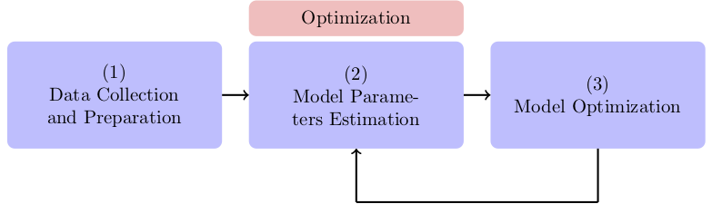
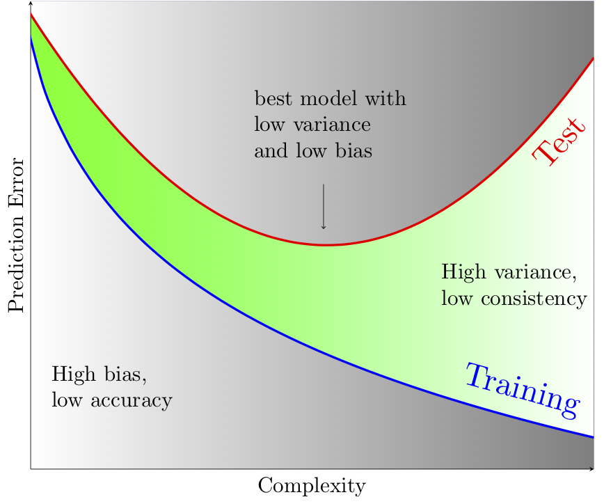
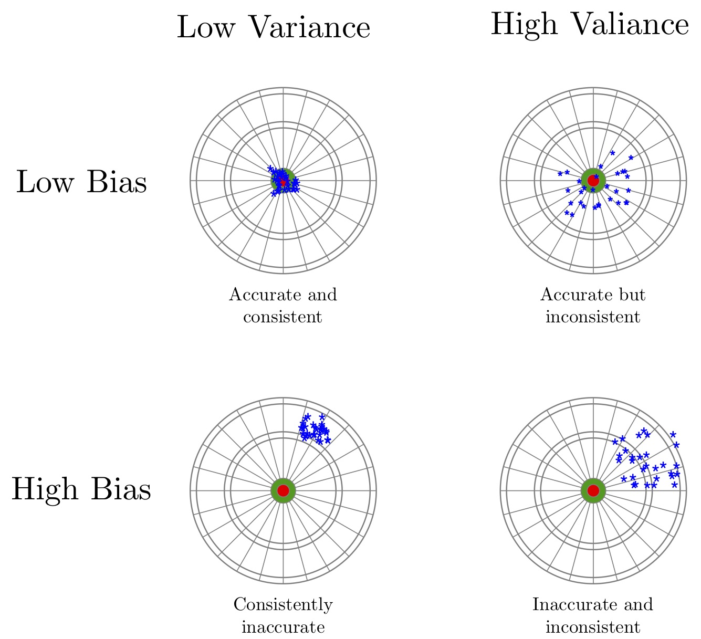
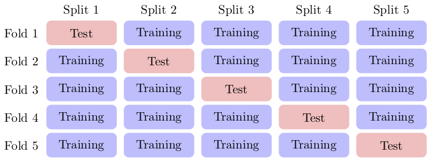

Machine Learning Basics
Better understanding of the most common concepts in machine learning
Table of Contents
Introduction
Machine learning is a statistical approach for making data-driven decisions through building models that are capable of capturing some patterns in data. Using historical data, models are trained to learn some patterns expected to exist in unseen data as well. Such machine learning models can answer questions of the following types:
- Is a transaction fraudulent? (classification)
- Is an email spam? (classification)
- Does a patient have cancer? What is the confidence level of our decision? (classification)
- How much demand for a product is expected in a particular day? (regression)
- Does a group of news belong to the same category? (clustering)
- Are beer and diaper bought together frequently? (association rules)
A common approach to build a machine learning model is depicted in the following diagram. This workflow is explained in more details next.

- Represent
- In this step, we collect data and choose a class of algorithms suitable for our particular problem. This class of algorithms can be a collection of \(k\)-nearest neighbors classifiers with different \(k\) parameter. We aim to choose the best from the set of models.
- Evaluate
- The collected data is partitioned into the training, validation, and test data. We train models on the training data and evaluate them on the validation data. The model with the best performance on the validation data is (temporarily) selected.
- Optimize
- We tune parameters of the model and repeat the evaluation step until we get satisfactory performance on the validation data. The performance of the final model is computed using the test data.
In summary, training data is used to train and build a model. Validation data is used to fine-tune the model. Finally, test data is used to compute the performance or the prediction power of the selected model.
Machine Learning Models
Machine learning algorithms look for hidden patterns in historical data with the hope that the patterns will appear in future unseen data. Machine learning models, or learners, are then built to capture the patterns and enable us to answer questions of interest by applying the models to unseen data.
In machine learning, data is typically a set of records, each containing a set of features. For example, in a clinical study, a record may represent information of a patient, while a feature may represent blood pressure of the patient. Some sample data can be downloaded from UCI Machine Learning Repository. Popular machine learning libraries, such as scikit-learn in Python, provide APIs for loading popular data sets.
Feature values can be scalar, categorical, ordinal, or text.
- Scalar Features typically contain measurement values, such as price, age, height, blood pressure, etc.
- Categorical Features hold categories of a small set. For example, spam filtering data may have a Spam feature with values {YES, NO} to indicate whether or not an email (a record of spam data) is spam.
- Ordinal Features are the same as categorical features in which categories are ordered. For example, T-shirt sizes may consist of the values {SMALL, MEDIUM, LARGE} which define an order.
- Text Features may hold any data in the text format, such as name, home address, date, etc.
Machine learning algorithms include two major categories: supervised and unsupervised.
In supervised learning, there is an outcome feature, beside other features, which is typically categorical or scalar. The goal is to predict the value of the outcome feature given the values of other features. The values of the outcome feature are given for historical data to supervise training prediction models or learners. For example, given a set of emails, we can manually categorize them as spam or not-spam. Then, we build a model using some features of the emails along with their outcome values (spam/not-spam). The model can finally be used to categorize a new email as spam or not-spam. This problem is a typical example of the binary classification problem. Other types include the regression problem and the multi-class classification problem.
In unsupervised learning, there is no outcome feature, and the objective is find hidden relations among records. For example, given a set of news, we may want to know how to organize them into a few clusters. This is referred to as the clustering problem. As another example, suppose we are given a set of transactions in a store, and would like to discover subsets of items that are bought together. This problem is referred to as the market basket analysis or association rules.
In the next section, we will see how to formulate the supervised learning problem as an optimization model. You may skip the theory and mathematics and jump to Section Bias-Variance Tradeoff.
Best Prediction Model
Note: This section discusses how to formulate a supervised learning problem as an optimization model. Readers who would like to understand the concept without getting deeper in the theory and mathematics may skip this section.
A supervised machine learning problem (whether classification or regression) is to find the best parametric function, a.k.a model, that reliably predicts target values of unseen data. To define the best model, we need a measure to compare different models. A loss functions is often used to measure the prediction error of a model. Therefore, a machine learning problem can be cast as an optimization problem to find model parameters that minimize total risk, defined based on the loss function. Note that we build a model using training data, thus called training a model, but compare models using test data to see how they can generalize to unseen data. Model accuracy and generalizability are both important and will be discussed in more details in the next section.
To formulate the optimization problem, we need a set of records, a parametric function to approximate the true predictor, and a loss function to measure the prediction error, described mathematically as follows:
- Data
- A set of records \(\{(\boldsymbol{x}_i, y_i): i=1,2,\ldots,m\}\), in which \(\boldsymbol{x}_i=(x_{i1},\ldots,x_{in})\) is the input data, with \(n\) features, and \(y_i\) is the target value; see Table 1.
- Predictor
- A parametric function \(\phi_\boldsymbol{w}(\boldsymbol{x})\) which maps a record \(\boldsymbol{x}\) from the input space to a value \(y\) in the target space.
- Measure
- A loss function \(\ell(y, \phi_\boldsymbol{w}(\boldsymbol{x}))\) to measure the prediction error.
| \(X\) | \(y\) |
|---|---|
| \(x_{11}\quad x_{12}\quad \dots \quad x_{1n}\) | \(y_1\) |
| \(\vdots\quad\quad \vdots\qquad\qquad \vdots\) | \(\vdots\) |
| \(x_{m1}\quad x_{m2}\quad \dots \quad x_{mn}\) | \(y_m\) |
To find unknown parameters, we minimize total risk defined as the total loss over all \((\boldsymbol{x}, y)\) values in its defined space. Since, the total risk is generally unavailable, we approximate it using the empirical risk, defined as \[ L_{\text{emp}}(\phi_\boldsymbol{w})=\frac{1}{m}\sum_{i=1}^m \ell(y_i, \phi_\boldsymbol{w}(\boldsymbol{x}_i)). \] Minimizing the latter total risk often yields a complex predictor. To obtain a simpler predictor, we add a regularization term with a multiplier \(\lambda\), known as the complexity parameter. The regularized total risk function is given as \[ L_{\text{reg}}(\phi_\boldsymbol{w})=\frac{1}{m}\sum_{i=1}^m \ell(y_i, \phi_\boldsymbol{w}(\boldsymbol{x}_i)) + \lambda R(\phi_\boldsymbol{w}). \]
Regression
The target values \(y_i\) in the regression problem are scalar, representing features such as weight, height, price, etc. Scalar target values may also be referred as the response values.
The linear regression model is one of well-studied and popular machine learning model. In linear regression, our choice of the predictor, loss function, and regularization term are as follows:
- Use the parametric function \(\phi_\boldsymbol{w}(\boldsymbol{x})=\boldsymbol{w}^T\boldsymbol{x}\) as the predictor.
- Use the quadratic error \(\ell(y,\boldsymbol{w}^T\boldsymbol{x})=(y-\boldsymbol{w}^T\boldsymbol{x})^2\) as the loss function.
- Use squared \(\ell_2\) norm \(R(\boldsymbol{w})=\|\boldsymbol{w}\|_2^2\) as the regularization term.
The regularized total risk is then computed as follows: \[ L(\boldsymbol{w})=\frac{1}{m}\sum_{i=1}^m (y_i-\boldsymbol{w}^T\boldsymbol{x}_i)^2+\lambda\|\boldsymbol{w}\|_2^2, \] also known as the Ridge Regression. The first term is well-known as the mean squared errors (MSE) and widely used in regression problems. The regularization term guarantees that the parameters of the predictor are small enough to yield a simple model.
Classification
In classification, we not only care about predicting class labels for unseen data, but also want to know how confident we are in predicting such. Therefore, we aim at predicting class probabilities or scores, from which class labels can be derived. For this, we may optimize the maximum likelihood estimation (MLE) or the maximum a posteriori (MAP) function, rather than optimizing loss functions directly. The Expectation maximization (EM) algorithm is often employed to solve MLE and MAP problems iteratively.
A classification model may map \(x\) values to scores or probabilities from which class labels can be easily derived. Scores and probabilities are real values in \((-\infty, +\infty)\) and \([0,1]\), respectively. We will denote score of \(x\) by \(\phi_w(x)\), probability of \(x\) by \(\psi_w(x)\), and predicted label of \(x\) by \(b_w(x)\). Assuming without loss of generality, that the class labels are \(\{-1,1\}\), the following approach is often used to compute predicted labels from scores or probabilities: \[ b_w(x)=\begin{cases} 1\quad \phi_w(x) \ge 0,\\ -1\quad \phi_w(x) < 0, \end{cases} \qquad\qquad b_w(x)=\begin{cases} 1\quad \psi_w(x) \ge 0.5,\\ -1\quad \psi_w(x) < 0.5. \end{cases} \]
Machine learning models typically have a complexity parameter. As model complexity increases, the prediction error on training data is expected to decrease. Although very accurate on training data, highly complex models are not generalizable to unseen data. Thus, there is a tradeoff between accuracy and generalizability of a model. In the next section, we will learn more about this tradeoff and characteristics of a good model.
Bias-Variance Tradeoff
As we discussed in the previous section, the prediction error on training data is not enough to assess the goodness of a model. A good model needs to be generalizable to unseen data as well. It can be shown that the expected error of a model is composed of three terms: bias, variance, and an irreducible error term; consult with The Elements of Statistical Learning for the proof and detailed discussion.
Bias is an error term that measures the accuracy of a model. High bias means that the model does not really capture the hidden pattern in the data. This is referred to as under-fitting. We ideally want a low bias model; but how low the bias should be? Models with a very low bias tend to capture the noise in the training data, resulting in an over-fitted model. Therefore, the bias itself as a measure is not enough for building a good model; we need another measure.
The variance is an error term that measures the consistency of a model. Over-fitted models usually have high variance. A high variance indicates that the model is not generalizable to unseen data.
Ideally, we want a model that captures hidden patterns in the training data (low bias) and generalizes well to unseen data (low variance). Thus, we need to minimize both bias and variance, simultaneously. As shown in Figure 2, a simple model usually has a high bias; such a model is under-fitted, regardless of having low or high variance. Assuming that we have enough training data, increasing model complexity will cause the bias and variance to decrease until a point where the variance will begin to grow. That point defines a model with optimal complexity that minimizes both bias and variance, simultaneously.

Figure 2: Bias-variance tradeoff in machine learning. A simple model yields high bias (low accuracy) on both training and test data. A complex model, on the other hand, yields high variance (low consistency) as it captures noise in the training data, too.
In summary, we have the following four cases, as depicted in Figure 3:
- High bias, high variance: The model is both inaccurate and inconsistent: under-fitted model. Typically, this occurs when there is no enough training data. To avoid this case, we simply collect more data.
- High bias, low variance: The model is consistently inaccurate: under-fitted model.
- Low bias, high variance: The model is accurate but inconsistent: over-fitted model.
- Low bias, low variance: The model is both accurate and consistent: well-fitted model.

Figure 3: Bias-variance variation. A good model has both low bias and low variance. High bias indicates that the model in under-fitted, and high variance signals that the model is over-fitted.
So far we learned that a good model, trained on the training data, has a low prediction error on the test data. However, we cannot rely on one set of training and test data, as we may get lucky to obtain low prediction error on one test data. In other words, one set of data is not representative of the whole space of possible unseen data.
One solution is to collect many sample data and repeat the process to compute prediction errors and combine them to obtain a good estimate of the true prediction error of the model. One way to combine the prediction errors is to take the average of them.
The problem with the latter solution is that we may not be able to collect many sets of data. Cross-validation technique, discussed in the next section, is a well-known approach to generate multiple sets of training and test data from a single data set.
Cross-Validation
One of the most widely-used methods to estimate the prediction error of a machine learning algorithm is the \(K\)-fold cross-validation. This method partitions data into \(K\) parts and generates \(K\) pairs of training-test data as follows: for each \(k\in\{1,2,\ldots,K\}\), the \(k\)-th part in Set \(k\) is the test data, while the rest is the training data. A 4-fold cross-validation data partitioning is depicted in the following diagram.

After generating \(K\) sets of data, we build models on the training data sets and compute the prediction errors on the test data sets. The prediction error of a machine learning algorithm is then computed by combining all the computed prediction errors. For example, we can compute the average of the computed errors as the ultimate prediction error.
Note: Stratified sampling may be employed in partitioning of the \(K\)-fold cross-validation technique for proportional distribution of the records into \(K\) parts.